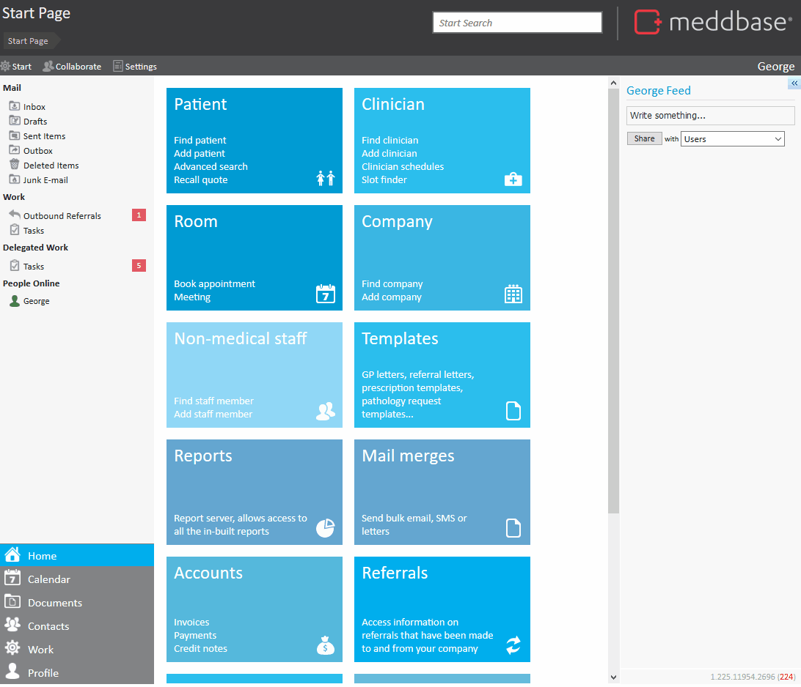

In Meddbase, adding a company is essential for building a comprehensive billing and referral system. Companies, including insurers, employers, and clinics, need to be registered in the system to facilitate accurate billing, create links for patient referrals, and manage company-specific information. This ensures that Meddbase can handle the complex interactions between patients, service providers, and insurers in a streamlined and efficient manner.
The purpose of this article is to guide users through the process of adding a company to the Meddbase system.
In order to add a company, navigate to the Companies > Add a Company. In much the same way as adding an Patient or Clinician, the ‘Add a Company’ page contains fields for a wide range of data, however, only the company name, company type and security policy are required in order to save a new company.
The company type dictates the fields for which the company will be eligible (An employer cannot be picked as a patient’s insurer for example).

Beyond this you may also include details such as:
Once you have completed all the details relevant to the company, click the ‘Save’ button in the top left to register your new company.
Depending on the company type selected, additional fields may become available after saving the record. For example, selecting an Employer type will enable the Occupational Health section of the company record page, allowing for further customization and data entry relevant to Occupational Health services.
Another example is selecting an Insurer Type will enable Health Code section of the record page to open up, allowing you to enter and save the insurer code.